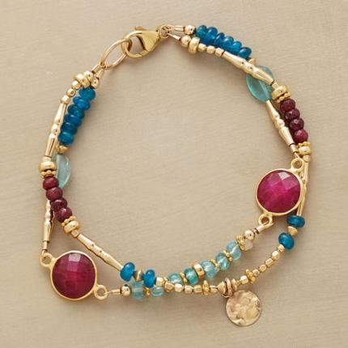

SẢN PHẨM NỔI BẬT
Túi xách
Trang trí tường
SẢN PHẨM MỚI
Vòng tay
Vòng tay
NGUYÊN LIỆU
Vải nỉ
Súng bắn keo
HƯỚNG DẪN
Cách gấp Toroto theo phong cách Origami
Chuẩn bị giấy gấp Origami kích thước 19.2 x 19.2 cm để tạo thành Totoro kích thước 8 x 10 cm nhé.
Bước 1:
Gấp đôi tờ giấy vừa chuẩn bị để tạo nếp gấp. Bạn dùng thước để đánh dấu đường gấp để gấp cho dễ dàng hơn nhé. Gấp một đường chéo từ giữa đến góc dưới bên phải. Sau đó tương tự như vậy với bên phải cũng giống thế. Rồi mở phần vừa gấp ra. Gấp đôi thêm lần nữa và tiếp tục gấp lại nếp gấp cũ. Ở bước này các bạn cũng làm 2 bên trái và phải như nhau.
Bước 2:
Bạn mở các nếp gấp vừa gấp ra rồi gấp đôi tờ giấy lại theo đường chéo cỉa hình vuông. Bên trái cũng gấp chéo như vậy. Mở tờ giấy ra, đánh dấu bằng bút vào 2 điểm có nếp gấp giao nhau. Rồi gấp mép theo 2 điểm chấm đó. Từ các nếp gấp đã gấp các bạn sẽ gấp thành được các phần tai của Totoro. Làm tương tự với bên trái rồi tiếp tục gấp tiếp bên phải vào thêm.
Bước 3:
Bạn gấp 2 bên đối xứng nhau như thế. Rồi sau đó lật mặt trước sẽ có hình mặt totoro nhé. Gấp góc bên phải vào giữa, rồi đến góc bên trái vào giữa. Sau đó lại lật ngược lại rồi gấp vào như 2 hình bên dưới đây nữa nhé các bạn. Cuối cùng gấp lại vào bên trong.
Bước 4:
Mở phần vừa gấp ra rồi gấp 2 phần góc nhọn nhô ra bên ngoài vào thành tam giác nhỏ. Rồi lại gấp chúng vào bên trong. Sau đó, bạn mở phần vừa gấp ra. Tiếp theo gấp ngược tam giác hướng lên trên sao cho đỉnh tam giác chạm vào phần giao của 2 tai.
Bước 5:
Bạn giữ phần vừa gấp lên và ấn vào để tạo thành đuôi của chú Totoro này. Sau đó lật đuôi sang bên phải rồi gấp phần giấy xuống để chiếc đuôi được thẳng đứng. Tương tự như vậy với bên phải nhé. Bạn gấp 2 bên của thân Totoro lại cho gọn hơn và mềm mại hơn. Rồi chỉnh sửa các đường nếp gấp sao cho thẳng. Như vậy chỉ với một chút thời gian bạn đã hoàn thành xong một chú Totoro cực xinh xắn, dễ thương này rồi.
Cách gấp túi giấy gói quà cực kì đơn giản
Cách làm thiệp sinh nhật đẹp